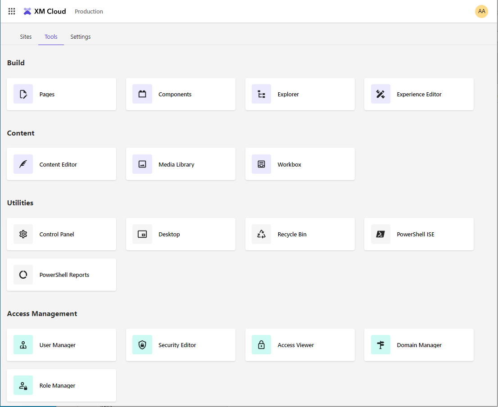
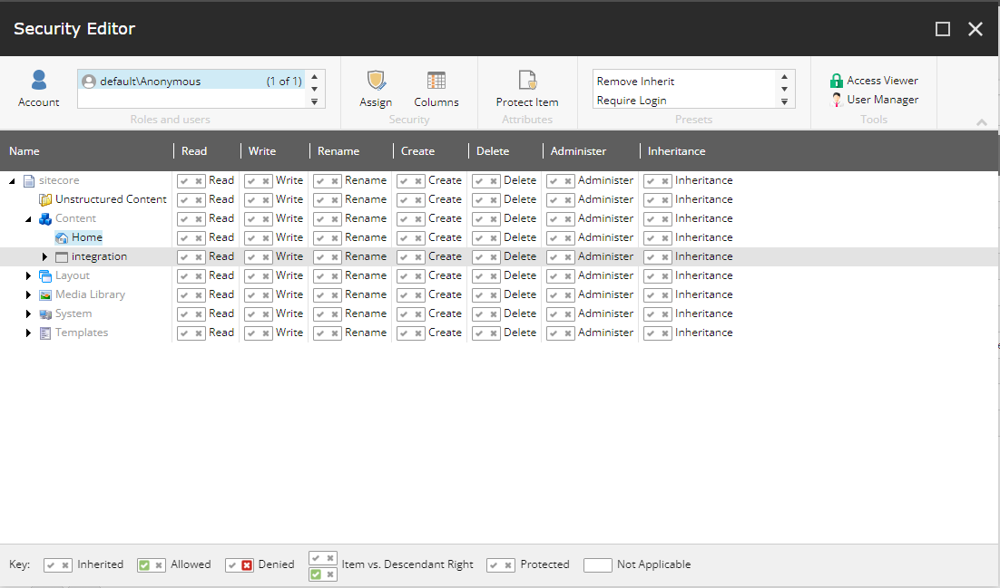
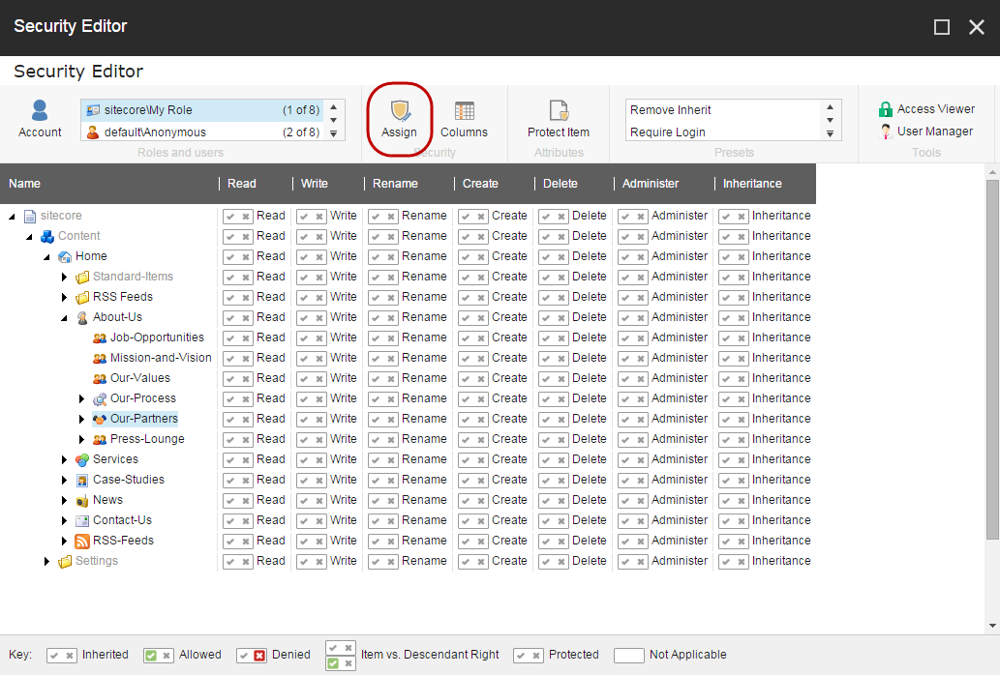
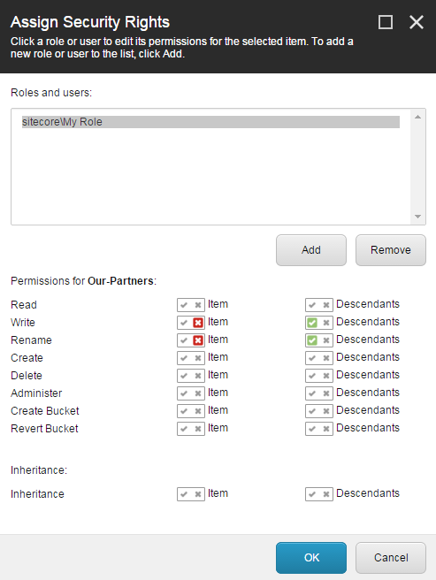
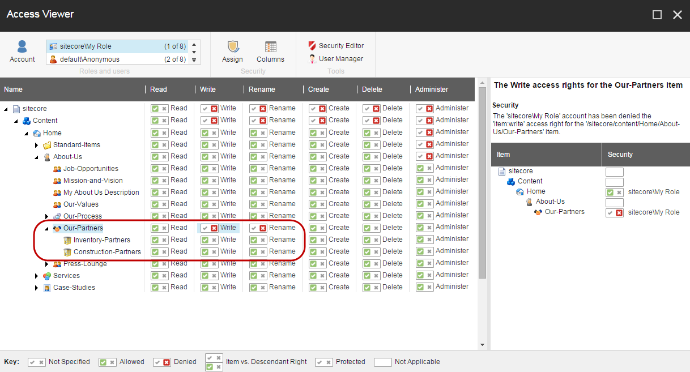
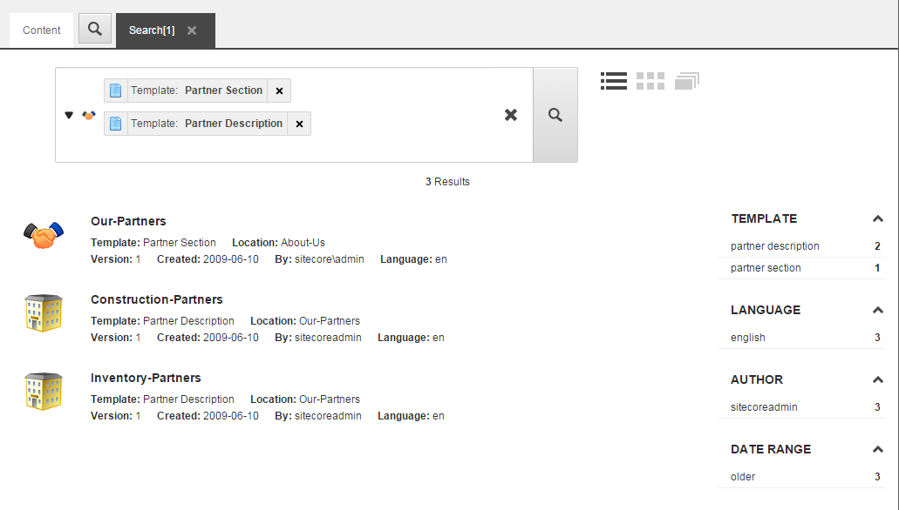
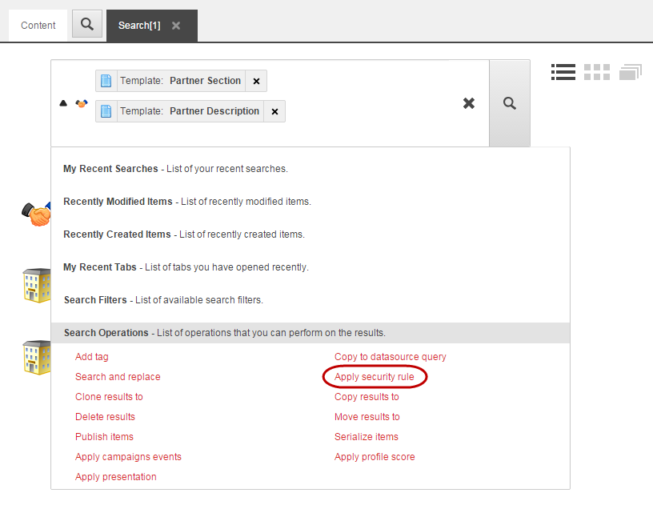
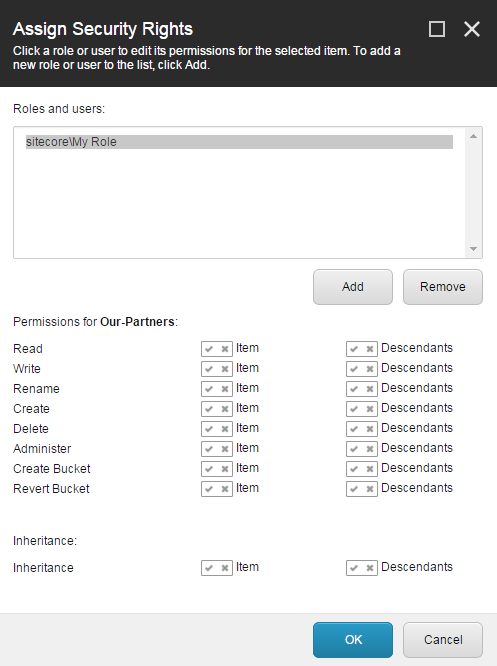

Assign access rights to a security account
How to grant or deny security account access rights to items in your system.
You assign access rights to a security account on a per-item basis. However, an item always inherits the access rights that are assigned to its parent item. This makes it easier for you to manage your security system because you do not necessarily have to assign access rights for each item in your content tree. Instead, you only need to assign and manage the access rights on the parent items and then specify whether their descendants can inherit these access rights.
To assign access rights to a role or a user:
On the Dashboard, on the Tools tab, click Security Editor.
In the Security Editor, in the Roles and users group, click the user or role that you want to assign the access rights to, for example Anonymous.
Note
If the relevant account is not available in the field, click Account, and then in the Add an Account dialog box, navigate to the relevant user or role, and click OK.
If you select a different domain than Sitecore, you must set the read/write permissions on the Languages node for one of the base roles or for the Everyone role for that domain.
In the content tree, click the item that you want the security account to have access rights to.
For each type of access right to the item (Read, Write, Rename, Create, Delete, Administer, and Inheritance) click
 to grant or click to deny the security account the access right to the item.
to grant or click to deny the security account the access right to the item.Note
The Sitecore/Everyone role is assigned to all users and roles, which means that they have Read access to all items by default.
In the ribbon, in the Attributes and Presets groups, specify additional security rights to the item:
Remove Inherit – this sets the Inherit right to Denied for the ‘*’ (Everyone) role. In this way, the item or its descendants do not inherit any security rights from any parent items.
Require Login – this sets the Read access to Denied for the extranet/Anonymous user. In this way, you can require extranet login to access the item and its descendants.
Protect Item – this makes the item unavailable for editing. For example, you can protect an item if you want to make sure that a user cannot accidentally delete an important item. Only an administrator or a user that is a member of the Sitecore Client Configuring role can protect an item and unprotect the item again.
Verify your setting in the Access Viewer. In the Security Editor, in the Tools group, click Access Viewer.
Note
Remember the user can be a member of multiple roles, which may have access rights to the item that overrule the access rights that you have just assigned.
In the Security Editor, you can specifically deny a security account the access to an item in the content tree. In this way, you can overrule the access rights that the item otherwise inherits from its parent item.
To deny a role access rights specifically to an item:
In the Security Editor, in the Roles and users group, click the role or user that you want to grant or deny access to.
Note
If the relevant account is not available in the field, click Account, and then in the Add an Account dialog box, navigate to the relevant user or role, and click OK.
In the content tree, click the relevant item, and in the Security group, click Assign.
In the Assign Security Rights dialog box, in the Permissions for section, grant or deny access to the item, the descendants, or both.
For example, to deny the security account Write and Rename access rights to the Our-Partners item only, click the for the item access rights. This overrides the inherited access rights for the Our-Partners item and its descendants. To allow the Write and Rename access rights to the subitems of Our-Partners, click the for the Descendants access rights.
 Note
In the Assign Security Rights dialog, you only need to grant or deny the access rights that you want to be different from the inherited access rights.
Verify your settings in the Access Viewer, where you can see the results of your settings on the descendants as well. In the Security Editor, in the Tools group, click Access Viewer.
Note
Remember that the user can be a member of multiple roles, which can have access rights that overrule the access rights that you have just assigned.
With the Sitecore search functionality, you can assign the same access rights to multiple items at the same time. For example, if you use item buckets that contain hidden items, you can use the search functionality to assign access rights and inheritance specifically to these hidden items.
Assign access rights to multiple items:
In the Content Editor or the Experience Editor, create a search and filter the results to list only the items that you want to assign the security rules to.
 Click the drop-down arrow to the left of the search field, click Search Operations, and then click Apply security rule.
 In the Assign Security Rights dialog box, in the Role and users section, click the account that you want to assign the security rights to.
Note
If the appropriate account is not in the list, click Add to add the relevant account to the list.
 In the Permissions for section, click the icons
 or for the relevant security rights and then click OK.
or for the relevant security rights and then click OK.Important
Even though the Permissions for section indicates that the access rights are assigned to the first item in the search result, they are in fact assigned to all the items included in the search result.
To verify your settings in the Access Viewer, in the Security Editor, in the Tools group, click Access Viewer.
Note
Remember that the user can be a member of multiple roles, which can have access rights that overrule the access rights that you have just assigned.